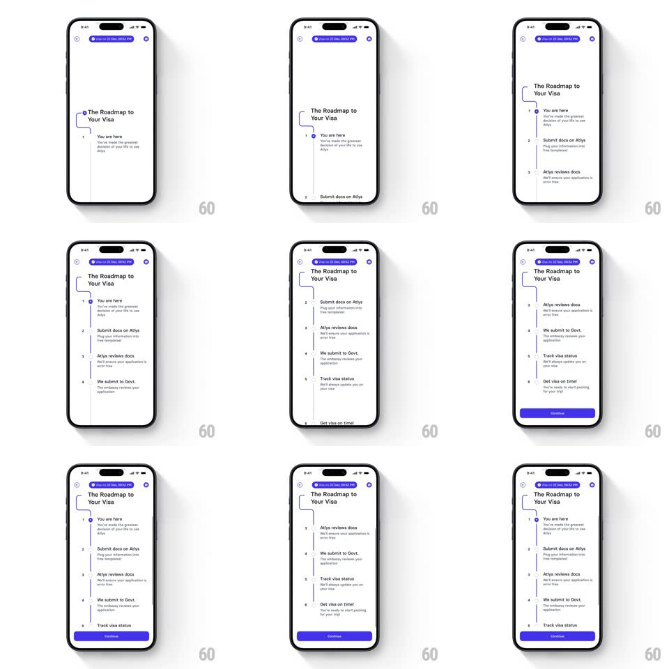

Media
Frame-by-frame

Rebuild this animation 1:1: Atlys' visa roadmap - pick a travel window and a vertical path draws itself down the screen, staggering in each milestone from "You are here" to "Get visa on time!"

Rebuild this animation 1:1: Atlys' visa roadmap - pick a travel window and a vertical path draws itself down the screen, staggering in each milestone from "You are here" to "Get visa on time!"
## Integration
Integration: stack-agnostic spec - springs given as stiffness/damping, timed motions as duration + curve; map every value to your framework and animation library of choice.
## Scene
A light screen under a step header ("Step 2 of 3 - 06:14 PM") with help and close icons. First, the question "When are you traveling?" with two bordered options ("Before Feb 22, 2026" / "After Feb 22, 2026"). Then the roadmap: the title "The Roadmap to Your Visa" and a numbered vertical journey - 1 "You are here", 2 "Submit docs on Atlys", 3 "Atlys reviews docs", 4 "We submit to Govt.", 5 "Track visa status", 6 "Get visa on time!" - each with a one-line description, and a purple Continue button.
## Motion spec
Pattern: vertical path drawing with staggered milestone reveal.
- On selection, the options fade out (200ms) and the title plus the path's start node fade in (250ms).
- The connecting line draws itself downward (stroke reveal, 1.2s total, ease-in-out), with a soft S-curve near the top node - the line leads, the content follows.
- Each milestone triggers as the drawn line reaches it: number node pops on (scale 0.5 -> 1.1 -> 1, spring ~380/16), then its title and description slide in from the left (16px, 280ms, ease-out).
- Node 1 ("You are here") carries the accent treatment (filled purple node); the rest are outlined until reached in the real product flow.
- The Continue button slides up (30px, spring ~320/20) once the last milestone lands.
## Calibration
- The draw pace is steady and legible - roughly 200ms per milestone gap; rushing it turns the journey into a list.
- The line is thin and neutral gray with the accent reserved for nodes and numbers - the path is structure, not decoration.
## Reduced motion
The full path and all milestones fade in at once (300ms); Continue follows.
## Don't miss
- The copy is first-person reassurance ("We submit to Govt.", "Get visa on time!") - keep the exclamation; it is the payoff node.
- The step header's live clock stays put through the transition - the frame is stable, only the body changes.